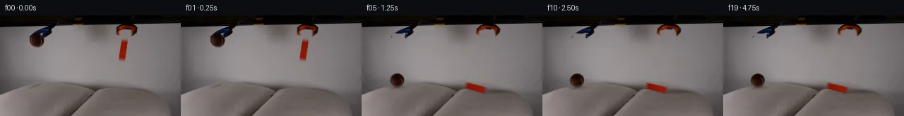

![首帧]()

Round 00
2026-11-04T19:07:27.758328+00:00像素候选变化代码 +270/−0inspection 更新
pixels 2671ac7a95607daa · code 43f0d056b7dcaed2
查看本轮 generate.py 真实 diff
--- previous/generate.py
+++ current/generate.py
@@ -0,0 +1,270 @@
+"""Photographic pixel continuation with local sprites and mathematical dynamics."""
+from pathlib import Path
+import json
+import numpy as np
+from PIL import Image, ImageDraw
+from scipy.ndimage import gaussian_filter, map_coordinates, binary_dilation
+from artifact_io import save
+
+ROOT = Path(__file__).resolve().parent
+ORIGINAL = np.asarray(Image.open(ROOT / 'first_frame.png').convert('RGB'))
+SRC = ORIGINAL.astype(np.float64)
+H, W = SRC.shape[:2]
+Y, X = np.mgrid[:H, :W].astype(float)
+RELEASE = .45
+GRAVITY = 2700.
+BALL_C = np.array([51.5, 35.0])
+BALL_R = 9.6
+BLOCK_PIVOT = np.array([172.5, 62.0])
+THETA0 = np.arctan2(5., 27.)
+
+
+def smoothstep(z):
+ z = np.clip(z, 0., 1.)
+ return z*z*(3-2*z)
+
+
+def wall_patch(cx, cy, rx, ry):
+ """Fit a smooth wall using nearby gray, unoccluded source pixels only."""
+ dx, dy = (X-cx)/rx, (Y-cy)/ry
+ use = (dx*dx+dy*dy < 3.8) & (Y > 20)
+ use &= (np.max(SRC, axis=2)-np.min(SRC, axis=2) < 16)
+ use &= (SRC.mean(axis=2) > 100)
+ terms = np.stack([np.ones_like(X), dx, dy, dx*dx, dx*dy, dy*dy], axis=-1)
+ coeff, _, _, _ = np.linalg.lstsq(terms[use], SRC[use], rcond=None)
+ patch = np.einsum('hwk,kc->hwc', terms, coeff)
+ return np.clip(patch, 0, 255)
+
+
+BALL_WALL = wall_patch(51.5, 36., 17., 19.)
+BLOCK_WALL = wall_patch(174.5, 48., 14., 25.)
+
+# The source ball silhouette is an ellipse; its upper right is claw-occluded.
+ball_dist = np.sqrt(((X-51.5)/9.9)**2 + ((Y-35.)/9.65)**2)
+ball_alpha = np.clip((1.035-ball_dist)*10.5, 0, 1)
+ball_alpha = gaussian_filter(ball_alpha, .23)
+# Remove the photographic wall contribution at the subpixel edge.
+ball_rgb = (SRC - BALL_WALL*(1-ball_alpha[..., None])) / np.maximum(ball_alpha[..., None], .06)
+ball_rgb = np.clip(ball_rgb, [12, 4, 1], [110, 73, 55])
+# Reconstruct the occluded upper-right arc using the adjacent ball color field.
+repair = ((Y < 32.) & (X > 55.5)) | ((Y < 27.5) & (ball_alpha > .05))
+rx = np.clip(X-51.5, -9.9, 9.9)/9.9
+ry = np.clip(Y-35., -9.65, 9.65)/9.65
+z = np.sqrt(np.maximum(0., 1-rx*rx-ry*ry))
+light = np.clip(.27 + .35*(-rx) + .14*ry + .13*z, .17, .8)
+ball_fill = np.stack([18+58*light, 4+32*light, 1+16*light], axis=-1)
+# Reuse measured fine texture; there is no random per-frame texture.
+texture = SRC[..., 0] - gaussian_filter(SRC[..., 0], 1.3)
+ball_fill += np.clip(texture, -2, 2)[..., None]*.25
+ball_rgb[repair] = ball_fill[repair]
+ball_pm = ball_rgb*ball_alpha[..., None]
+
+# Chroma matting captures the photograph's naturally soft block edges.
+block_alpha = np.clip((SRC[..., 0]-SRC[..., 1]-6.)/109., 0, 1)
+block_roi = (X >= 165) & (X <= 183) & (Y >= 31) & (Y <= 66)
+block_alpha *= block_roi
+block_alpha[block_alpha < .018] = 0
+block_rgb = (SRC-BLOCK_WALL*(1-block_alpha[..., None])) / np.maximum(block_alpha[..., None], .04)
+block_rgb = np.clip(block_rgb, [112, 10, 0], [151, 40, 18])
+block_pm = block_rgb*block_alpha[..., None]
+
+# Preserve handle pixels, and independently articulate only their distal tips.
+blue_color = (SRC[..., 2] > SRC[..., 0]*1.18) & (SRC[..., 0] < 90)
+blue_right = blue_color & (X >= 58) & (X <= 64) & (Y >= 26) & (Y <= 32)
+blue_left = blue_color & (X >= 41) & (X <= 47) & (Y >= 25) & (Y <= 32)
+orange_left = (X >= 164) & (X <= 174) & (Y >= 19) & (Y <= 30) & (SRC.mean(axis=2) < 100)
+orange_right = (X >= 185) & (X <= 195) & (Y >= 19) & (Y <= 30) & (SRC.mean(axis=2) < 100)
+JAWS = [(blue_left, np.array([47., 25.]), -.15, -1.3),
+ (blue_right, np.array([60., 25.]), .15, 1.9),
+ (orange_left, np.array([171., 18.]), .16, -1.5),
+ (orange_right, np.array([188., 18.]), -.16, 1.5)]
+
+base = SRC.copy()
+ball_remove = gaussian_filter(binary_dilation(ball_alpha > .025, iterations=2).astype(float), .6)
+# Keep blue handle/head pixels which are outside the two moving distal tips.
+preserve_blue = blue_color & (Y <= 32) & ~blue_left & ~blue_right
+ball_remove[preserve_blue] = 0
+base = base*(1-ball_remove[..., None]) + BALL_WALL*ball_remove[..., None]
… diff truncated; 183 more lines …